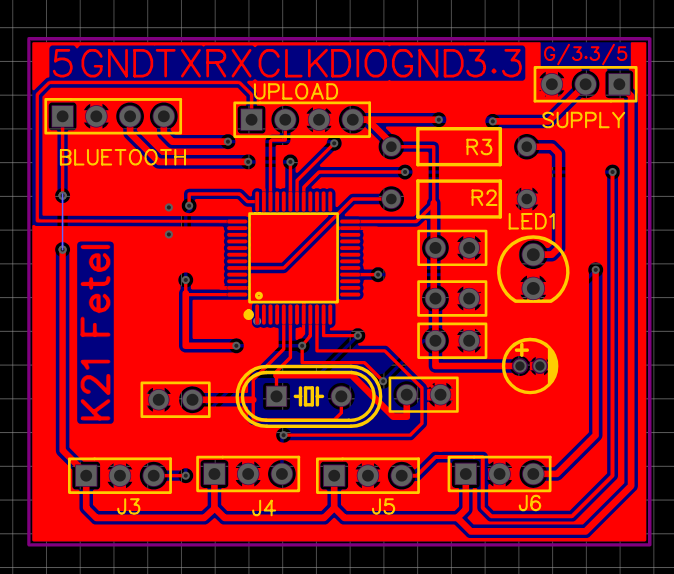
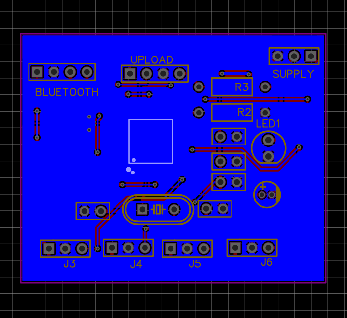
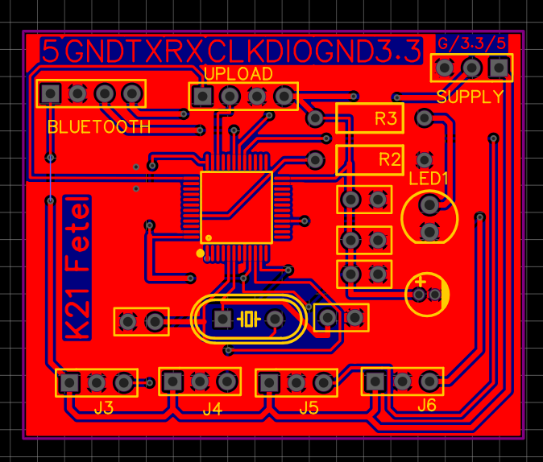
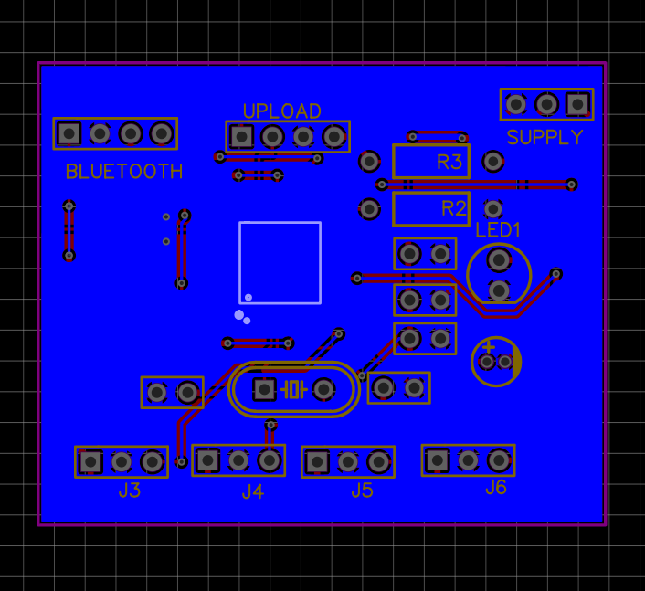

Bluetooth-Controlled Robotic Arm
Final Course Project – Microcontroller Lab
Team size: 5 | My role: Team Leader
Project Overview
This project was the final capstone for our Microcontroller Lab course. The objective was to design and construct a robotic arm capable of grasping light objects, controlled wirelessly via Bluetooth from a custom desktop application. The core of the system is an STM32 microcontroller.
Project Components & Workflow
The project was divided into three main technical components:
1. Embedded System & Hardware Design
This involved programming the STM32 microcontroller to control the servo motors of the arm and designing the physical structure. The code handled precise angle control for each joint to perform grasping actions.
2. Custom PCB Design
A custom Printed Circuit Board (PCB) was designed to house the STM32F103C8T6 microcontroller. And a PCB was created to act as a "shield," providing clean and reliable connections between the main controller board, the Bluetooth module (5.0 BLE MESH JDY-24M), servo motors, and power supply.
 



3. C# Desktop Control Application
A desktop application was developed using C# to provide a user-friendly interface for controlling the robotic arm. The application connects to the arm's Bluetooth module and sends commands to move the servos, allowing for real-time remote operation.
My Contributions
- As Team Leader, I was responsible for the overall project planning, defining milestones, and assigning tasks to team members.
- I designed and developed the C# desktop application for wireless control, including the GUI and the Bluetooth communication protocol.
- I provided key support in programming the STM32 microcontroller, assisting with debugging the servo control logic and communication code.
Results & Reflections
- The robotic arm was fully operational and could be controlled remotely and reliably via the Bluetooth connection.
- Area for Improvement: While the electronics and software worked well, the mechanical design of the arm lacked structural rigidity. As a result, it was primarily limited to lifting very light objects.